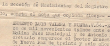

Birth registration for Ernesto Luis Valera y Rueda of Nueva Paz, Cuba in 1915
A certified transcript of the birth registration information for Ernesto Luis Valera y Rueda, born 9 February 1915 in Nueva Paz, La Habana province, Cuba. Includes a summary of key information, as well as the Spanish transcript and English translation of that essential information.
Citation and Download
Certified transcript of birth registration for Ernesto Luis Valera y Rueda, issued 21 September 1961, Municipal Court, Nueva Paz, La Habana province, Cuba; citing original certificate no. 54, filed 3 March 1915, p. 87, vol. 9-B, Births (Nacimientos), Civil Registry, Municipal Court, Nueva Paz. [Download the original document, scanned with permission from his daughter's private collection.]
Abstract
An overview of the main people, places, and dates found in this document.
Timeline
- 9 February 1915: Date of birth - Ernesto born at 4:00 p.m. in Nueva Paz.
- 3 March 1915: Date of original record - Ernesto's birth filed in civil registry of the municipal court in Nueva Paz.
- 21 September 1961: Date certified transcript issued - by Nueva Paz municipal court to Ernesto Valera.
- 5 October 1961: Date transcript signatures confirmed - by Ministry of Justice in Habana.
People and Relationships
The list below details the people mentioned in Ernesto's birth registration, how they are related to him, and any of their relevant personal details.
- Ernesto Luis Valera y Rueda: the person whose birth is registered by this document.
- Dr. Ernesto Valera y Rueda: Ernesto's father
- Native of: Nueva Paz (La Habana province)
- Resident of: Palos (on 3 March 1915)
- Age: 36 years old (on 3 March 1915, born between 4 Mar 1878 and 3 Mar 1879)
- Profession: doctor (on 3 March 1915)
- Maria Luisa Martinez Rueda: Ernesto's mother
- Native of: Nueva Paz
- Resident of: Nueva Paz (on 3 March 1915)
- Age: 23 years old (on 3 March 1915, born between 4 Mar 1891 and 3 Mar 1892)
- Dr. Ernesto Valera: Ernesto's paternal grandfather (Ernesto Senior's father)
- Native of: Matanzas
- Resident of: Jagua neighborhood [in Nueva Paz] (on 3 March 1915)
- Teresa Rueda: Ernesto's paternal grandmother (Ernesto Senior's mother)
- Native of: Camaguey
- Resident of: Jagua neighborhood [in Nueva Paz] (on 3 March 1915)
- Pedro Rueda: Ernesto's maternal grandfather (Teresa's father)
- Native of: Pinar del Rio
- Resident of: Nueva Paz (on or before 3 March 1915)
- Other: now deceased (on or before 3 March 1915)
- Florinda Martines: Ernesto's maternal grandmother (Teresa's mother)
- Native of: Nueva Paz
- Resident of: Nueva Paz (on 3 March 1915)
- Mr. Jesus F. Larrea y Rossie: legal adult witness to original birth registration
- Native of: Madruga
- Resident of: Nueva Paz (on 3 March 1915)
- Other: married and employed (on 3 March 1915)
- Mr. Abraham Rivero Borges: legal adult witness to original birth registration
- Native of: Nueva Paz
- Resident of: Nueva Paz (on 3 March 1915)
- Other: married and employed (on 3 March 1915)
English translation of main information in document [formatting and headings added]
Jurisdiction (1961)
4559 [stamped in black]
4036 [stamped in black]
0048300 [stamped in green]
Doctor Dorita Finale y Sosa, Municipal Judge for the Civil Registry of Nueva Paz
Location of original (1915)
I hereby certify that on page 87 of volume nine B., in the Births section of this municipal court's Civil Register, I have copied the record that says:
Copy of original (1915)
Ernesto Luis Valera y Rueda. V.54.
In Nueva Paz on March 3 of 1915 before Mr. Emilio Sardina y Molina, Municipal Judge, and Antonio Echegoyen y Sotolongo, Secretary, appears Doctor Ernesto Valera y Rueda, native of Nueva Paz, thirty-six years old, doctor and resident of the town of Palos, in order to enroll in the registry the birth of a male that took place at four in the afternoon of February 9 of the current year and that his name is LUIS ERNESTO and the same person declared himself the child's father.
That the male is the son of the declarant and Mrs. Maria Luisa Martinez Rueda, native of Nueva Paz, twenty-three years old and domiciled in the same place.
That he is the paternal grandson of Dr. Ernesto Valera and Mrs. Teresa Rueda, natives of Matanzas and of Camaguey, residents of the Jagua neighborhood in this city.
And is the maternal grandson of Mr. Pedro Rueda, native of Pinar del Rio (now deceased), and Mrs. Florinda Martines, native of Nueva Paz, resident of this city.
Eyewitnesses were Misters Jesus F. Larrea y Rossie and Abraham Rivero Borges, natives of Madruga and of Nueva Paz, legal adults, married, employed, and residents of this city.
Legal details of certified issuance (1961)
At the request of Ernesto Valera, I sign this in Nueva Paz on the twenty-first of September 1961.
Transcript of essentials from original Spanish document [formatting and headings added]
Jurisdiction (1961)
4559 [stamped in black]
4036 [stamped in black]
0048300 [stamped in green]
Doctora Dorita Finale y Sosa, Juez Municipal Encargado del Registro Civil de Nueva Paz
Location of original (1915)
CERTIFICO: que al folio 87 del Tomo Noveno B., de la Seccion de Nacimientos del Registro Civil a cargo de este Juzgado, consta el acta que copiada dice:
Copy of original (1915)
ERNESTO LUIS VALERA Y RUEDA. V.54.
En Nueva Paz a tres de Marzo de mil novecientos quince ante el Señor Emilio Sardifia y Molina Jues Municipal y de Antonio Echegoyen y Sotolongo Secretario comparece el Doctor Ernesto Valora y Rueda, natural de Nueva Paz, de treinta y seis años de edad, medico y vecino del poblado de Palos, con el objeto de que se inscriba en el Registro Civil el nacimiento de un varon que tuvo lugar a las cuatro de la tarde del dia nueve de Febrero del año actual, y que le puso por nombre ERNESTO LUIS y al efecto como padre del mismo declaro. Que dicho varon es hijo del declarante y de Dona Maria Luisa Rueda y Martinez, natural de Nueva Pas, de veinte y tres años de edad y vecina del domicilio del compareciente.
Que es nieta por linea paterna de Dr. Ernesto Valera y Dona Teresa Rueda, naturales de Matanzas y Camaguey vecinos del barrio Jagua en este Término y por la materna de Don Pedro Rueda, natural Pinal del Rio ya difunto y Dona Florinda Martines, naturales de Nueva Paz, vecina de esta ciudad.
Fueron testigos los Senores Jesus F. Larrea y Rossie, Abraham Rivero Borges, naturales de Madruga y Nueva Paz, mayores de edad, casados empleados y vecinos de esta ciudad.
Legal details of certified issuance (1961)
A instancia de Ernesto Valera, expido la presente en Nueva Paz a veinte y uno de Septiembre del mil novecientos sesenta y uno.